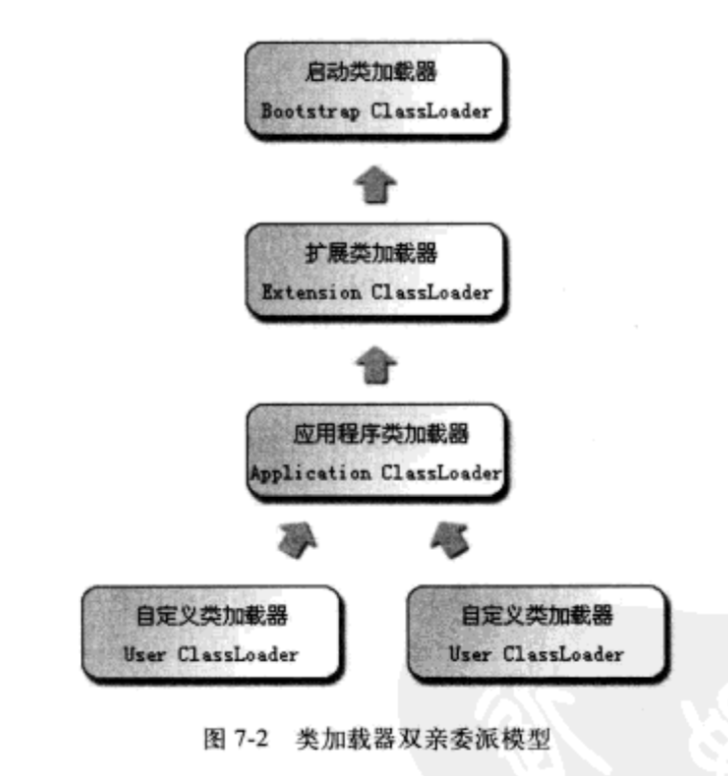

虚拟机把描述类的数据从Class文件加载到内存，并对数据进行校验，转换解析和初始化，最终形成可以被虚拟机直接使用的java类型 java中类型的 加载 和 连接 过程都是在 程序运行期间 完成的，这样会在类加载时增加一些性能开销，但能提供高度的灵活性 java中可以动态扩展的语言特性就是依赖运行期动态加载和动态连接这个特点实现的
类加载的整个生命周期：
- 加载
-
连接
- 验证
- 准备
- 解析
- 初始化
- 使用
- 卸载
其中，解析阶段可能在初始化阶段之后再开始，这是为了支持java语言的运行时绑定
对类立即进行初始化的四种情况如下：
- 遇到new, getstatic, putstatic或invokestatic这4条字节码指令时。对应代码场景：用new实例化对象，读取或设置一个类的静态字段（被final修饰、已在编译期把结果放入常量池的静态字段除外）的时候，调用一个类的静态方法时
- 使用java.lang.reflect包的方法对类进行反射调用时
- 初始化一个类时，如果其父类没有被初始化，先触发其父类的初始化
- 虚拟机启动时，用户需要指定一个要执行的主类（包含main方法的那个类），虚拟机会先初始化这个主类
这四种场景中的行为称为对一个类进行主动引用，除此之外所有引用类的方式都不会触发初始化，称为被动引用
接口的初始化与类初始化稍有区别，接口中不能使用static{}语句块，但编译器仍然会为接口生成"<clinit>"类构造器，用于初始化接口中所定义的成员变量。第三种情况下，当一个接口在初始化时，并不要求其父接口全部都完成了初始化，只有在真正使用到父接口的时候（如引用接口中定义的常量）才会初始化
- 通过一个类的全限定名来获取定义此类的二进制字节流
- 将这个字节流所代表的静态存储结构转化为方法区的运行时数据结构
- 在java堆中生成一个代表这个类的java.lang.Class对象，作为方法区这些数据的访问入口
其中第一点，并没有指明二进制字节流要从一个Class文件中获取，因此灵活度相当大。许多java技术都建立在这个基础之上，如：
- 从ZIP包中读取，最终成为日后jar，ear，war格式的基础
- 运行时计算生成，使用的最多的是动态代理技术，在java.lang.reflect.Proxy中，就是用了ProxyGenerator.generateProxyClass来为特定接口生成*$Proxy的代理类的二进制字节流
等等...
相对于类加载过程的其他阶段，加载阶段（准确说是加载阶段中获取类的二进制字节流的动作）是开发期可控性最强的阶段。因为加载阶段既可以使用系统提供的类加载器完成，也可以由用户自定义的类加载器去完成
加载阶段完成后，虚拟机外部的二进制字节流就按虚拟机所需的格式存储在方法区中，然后再java堆中实例化一个java.lang.Class类的对象，这个对象将作为程序访问方法区中的这些类型数据的外部接口。
加载和连接阶段的部分内容是交叉进行的，(如一部分字节码的格式验证动作),但这两个阶段的开始时间仍然保持固定的先后顺序
连接阶段的第一步，为了确保Class文件的字节流中包含的信息符合当前虚拟机的要求，并且不会危害虚拟机自身的安全
-
文件格式验证：保证输入的字节流能正确的解析并存储于方法区之内。经过这个阶段的验证后，字节流会进入内存的方法区中进行存储，所以后面的三个验证阶段全部是基于方法区的存储结构进行的
- 是否以魔数0xCAFEBABE开头
- 主、次版本号是否在当前虚拟机处理范围之内
- 常量池中常量的tag标志
- CONSTANT_Utf8_info型的常量中是否有不符合UTF8编码的数据
- ......
-
元数据验证：对类的元数据信息进行语义分析，保证其描述的信息符合java语言规范要求
- 这个类是否有父类
- 这个类的父类是否继承了不允许被继承的类(被final修饰的类)
- ......
-
字节码验证：进行数据流和控制流分析，对类的方法体进行校验分析。保证类的方法在运行时不会做出危害虚拟机安全的行为
- 保证任意时刻操作数栈的的数据类型与指令代码都能配合工作，不会出现例如：在操作数栈中放置了一个int类型的数据，使用时却按照long类型来加载入本地变量表
- 保证跳转指令不会跳转到方法体以外的字节码指令上
- 保证方法体中的类型转换是有效的，如把一个子类对象赋值给父类数据类型
- ...... 通过字节码验证不能说明一定安全，涉及停机问题Halting Problem：不能通过程序检查出程序是否存在死循环 为了提高字节码验证的速度，JDK 1.6之后的javac编译器中进行了优化，给方法体的Code属性的属性表中增加了"StackMapTable"属性
-
符号引用验证：发生在将符号引用转化为直接引用的时候，这个转化动作将在解析阶段中发生。符号引用验证可以看做是对类自身以外（常量池中的各种符号引用）的信息进行匹配性的校验：
- 符号引用中通过字符串描述的全限定名是否能找到对应的类
- 符号引用中的类、字段和方法的访问性是否可被当前类访问
正式为类变量分配内存并设置类变量（static修饰的变量）初始值的阶段，这些内存都在方法区中进行分配。 这里的初始值是指：
-
如果是非final的static变量如：
public static int value = 123;
value在准备阶段过后的初始值是0，而把value赋值为123的putstatic指令是程序被编译后，存放于类构造器<clinit>()方法中，所以赋值为123的动作将在初始化阶段才会被执行
-
如果是final的static变量如：
public static final int value = 123;
编译时javac将会为value生成ConstantValue属性，在准备阶段虚拟机会将value赋值为123
将常量池内的符号引用替换为直接引用的过程。
以一组符号来描述所引用的目标，可以是任何形式的字面量，只要使用时能无歧义的定位到目标即可
直接指向目标的指针、相对偏移量或是一个能间接定位到目标的句柄。与虚拟机实现的内存布局相关。如果有了直接引用，那引用的目标必定已经在内存中存在
在执行这13个用于操作符号引用的字节码指令之前 anewarray, checkcast, getfiled, getstatic, instanceof, invokeinterface, invokespecial, invokestatic, invokevirtual, multianewarray, new, putfiled, putstatic
解析动作主要针对类或接口，字段，类方法，接口方法四类符号引用进行，分别对应于常量池的CONSTANT_Class_info, CONSTANT_Fieldref_info, CONSTANT_Methodref_info, CONSTANT_InterfaceMethodref_info四种常量类型
真正开始执行类中定义的java程序代码（或者说是字节码），初始化阶段是执行类构造器<clinit>()方法的过程
- <clinit>方法是由编译器自动收集类中的所有类变量的赋值动作和静态语句块中的语句合并产生的，顺序由语句在源文件中出现的顺序所决定的。静态语句块只能访问到定义在静态语句块之前的变量，对于定义在它之后的变量，可以赋值但不能访问
- <clinit>()方法与类的构造函数即实例构造器<init>()方法不同，它不需要显式调用父类构造器，虚拟机会保证在子类的<clinit>()方法执行之前，父类的<clinit>()方法已经执行完毕
- 接口中不能使用静态语句块，但执行接口的<clinit>()方法不需要先执行父接口的<clinit>方法。只有当父接口中定义的变量被使用时，父接口才会被初始化。另外，接口的实现类在初始化时也不会执行接口的<clinit>()方法
- 虚拟机会保证一个类的<clinit>()方法在多线程环境中被正确的加锁和同步，如果多个线程同时去初始化一个类，那么只会有一个线程去执行这个类的<clinit>()方法，其他线程都需要阻塞等待。
把类加载阶段的“通过一个类的全限定名来获取描述此类的二进制字节流”这个动作放到jvm外部去实现，以便让应用程序自己决定如何去获取所需要的类，实现这个动作的代码模块被称为“类加载器”
public class ClassLoaderTest {
public static void main(String[] args) throws Exception {
ClassLoader myLoader = new ClassLoader() {
@Override
public Class<?> loadClass(String name) throws ClassNotFoundException{
try {
String fileName = name.substring(name.lastIndexOf(".") + 1) + ".class";
InputStream is = getClass().getResourceAsStream(fileName);
if(is == null) {
return super.loadClass(name);
}
byte[] b = new byte[is.available()];
is.read(b);
return defineClass(name, b, 0, b.length);
} catch(IOException e) {
throw new ClassNotFoundException(name);
}
}
};
Object obj = myLoader.loadClass("xxx.ClassLoaderTest").newInstance();
System.out.println(obj.getClass());
System.out.println(obj instanceof xxx/ClassLoaderTest);
}
运行结果：
class xxx.ClassLoaderTest
false
上述代码使用自己定义的类加载器去加载类，虚拟机中存在两个ClassLoaderTest类，一个是由系统应用程序类加载器加载的，另外一个是由我们自定义的类加载器加载的，虽然都来自同一个Class文件，但是是两个独立的类，做对象所属类型检查时结果为false
- 启动类加载器Bootstrap Classloader, Hot Spot中使用C++实现，是虚拟机自身的一部分
- 所有其他的类加载器，由java实现，独立于虚拟机外部，全都继承自抽象类java.lang.ClassLoader
- 启动类加载器Bootstrap Classloader，负责将存放在<JAVA_HOME>\lib目录中的，或者被-Xbootclasspath参数所指定的路径中的，并且是虚拟机识别的类库加载到虚拟机内存中，启动类加载器无法被java程序直接引用
- 扩展类加载器Extension ClassLoader, 负责加载<JAVA_HOME>\lib\ext目录中的，或者被java.ext.dirs系统变量所指定的路径中的所有类库，开发者可以直接使用扩展类加载器
- 应用程序类加载器Application ClassLoader，这个类加载器是ClassLoader中的getSystemClassLoader()方法的返回值，也称系统类加载器。负责加载用户类路径ClassPath上所指定的类库，开发者可以直接使用这个类加载器，如果程序中未定义过自己的加载器，这个就是默认的类加载器
parents delegation model 双亲委派模型不是一个强制性的约束模型，而是推荐的一种类加载器实现方式。 双亲委派模型要求除了顶层的启动类加载器外，其余的加载器都应该有自己的父类加载器，这里类加载器之间的父子关系一般不会以继承的关系来实现，而是都是用组合关系来复用父加载器的代码。//TODO 为什么使用组合？ 
如果一个类加载器收到了类加载的请求，它首先会把这个请求委派给父类加载器去完成，因此所有的家在请求最终都传送到顶层的启动类加载器中，只有当父加载器无法完成这个加载请求时，子加载器才会尝试自己加载。